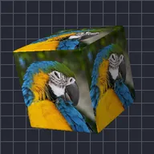

کیوب

لیئر کو گول کناروں اور لائٹنگ والے گھومتے کیوب کے ہر چہرے پر لپیٹتا ہے۔
کیوب لیئر کو 3D کیوب کے چہروں پر لپیٹتا ہے۔ روٹیشن X، روٹیشن Y اور روٹیشن Z اسے گھماتے ہیں (گھومتے کیوب کے لیے انہیں اینیمیٹ کریں)، سائز اور اسکیل اس کا سائز تبدیل کرتے ہیں، پرسپیکٹیو گہرائی کا ایفیکٹ، اور شیڈنگ، لائٹ اینگل اور شائن روشنی۔ کیمرہ لیئرز اور 3D دیکھیں۔
سیٹنگز
| سیٹنگ | قسم | رینج | ڈیفالٹ |
|---|---|---|---|
| روٹیشن X | زاویہ | -3600° سے 3600° تک | -20° |
| روٹیشن Y | زاویہ | -3600° سے 3600° تک | -35° |
| روٹیشن Z | زاویہ | -3600° سے 3600° تک | 0° |
| سائز | نمبر | 0.05 سے 5 تک | 0.7 |
| سموتھنگ | نمبر | 0 سے 1 تک | 0.15 |
| پوزیشن | پوائنٹ (X, Y) | -5000 px سے 5000 px تک | 0 px, 0 px |
| اسکیل | نمبر | 0.05 سے 10 تک | 1 |
| پرسپیکٹو | نمبر | 0 سے 1 تک | 0.5 |
| شیڈنگ | نمبر | 0 سے 1 تک | 0.6 |
| لائٹ اینگل | زاویہ | -3600° سے 3600° تک | 135° |
| شائن | نمبر | 0 سے 1 تک | 0.3 |